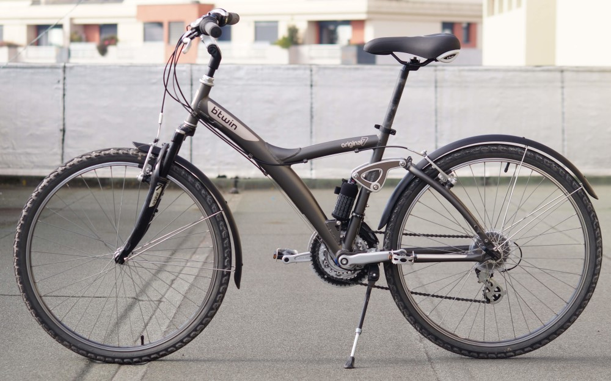
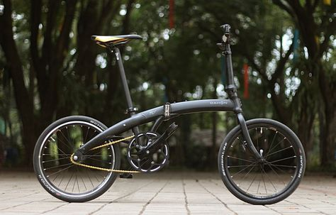
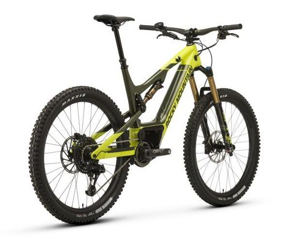
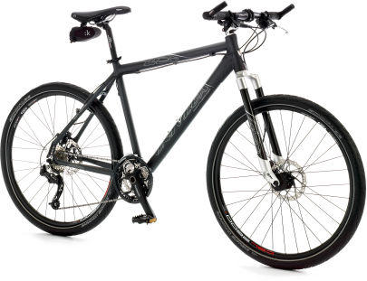
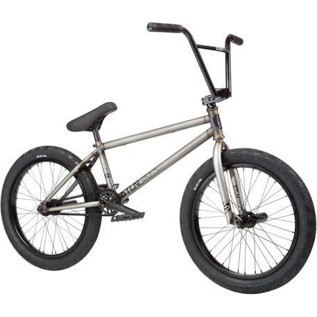
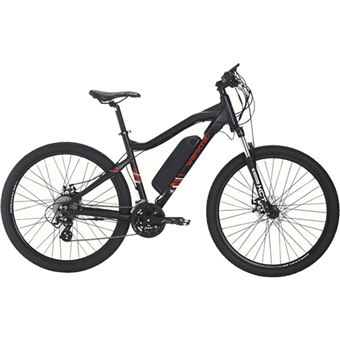
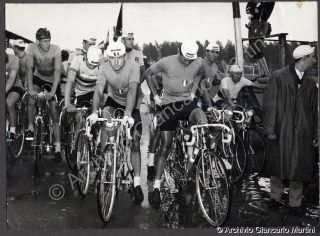

Abaixo mostrarei os principais tipos de bicicletas.
Urbana

Como o próprio nome indica são as bicicletas que são construídas especificamente para atender a
necessidade do deslocamento urbano ou como uma simples recreação para o seu proprietário.
Dobrável

As bicicletas dobráveis também foram criadas com o intuito de oferecer os recursos necessários para quem
quer se deslocar dentro de uma cidade, mas com um diferencial que é a facilidade de portabilidade.
Montain Bike

As mountains bikes já são conhecidas da maioria das pessoas que têm algum gosto pelo ciclismo. Esse tipo
de bicicleta foi originalmente fabricado para ser utilizada na terra, mas se quiser pode utilizá-la em
qualquer terreno e em diferentes condições.
Speed

omo o próprio nome sugere são os modelos de bicicletas criadas especialmente para a realização de
corridas. Dessa forma, elas são bastante leves, seus pneus são bem finos e a pressão é alta.
Bmx

Trata-se, na verdade, de um esporte que foi criado na Holanda durante a década de 1950. Nessa modalidade
são utilizadas pistas de terras acidentadas com curvas inclinadas e rampas. A prática do esporte
consiste em uma corrida ou mesmo manobras.
Elétrica

Facilmente encontrada hoje nas grandes cidades, as bicicletas elétricas possuem uma velocidade média de
aproximadamente 25 km/h e conseguem percorrer até 40 km/h com um custo de quilômetro rodado inferior a 5
centavos.
https://bicicletaparatodos.com.br/diferentes-tipos-bike/
Página principal
